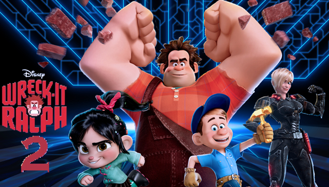

About Ralph
Ralph is a an 8-bit videogame badguy who travels the length of the arcade to prove that he is a good guy.
Ralph and his friends
Ralph's characteristics
- He has big hands
- He is treated as bad-ass
- He is actually a good guy
Ralph's friends
Ralph has some awesome best friends. One of them is Glitch. To read more, click on the links below.